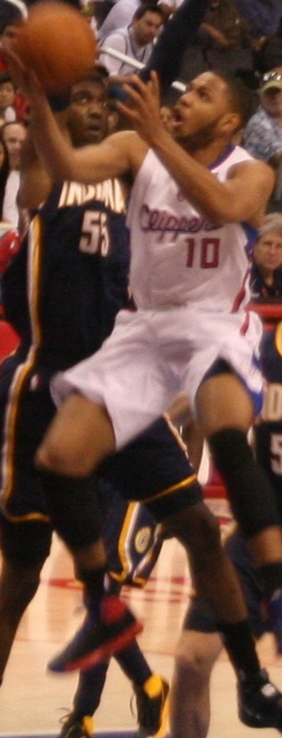

Miles Okafor
SG / 23 / 6'5"
Three image languages. Six reusable subjects. A photographic experiment. Small moments of motion.
Open the new photographic dot-press study: isolated Curry and Rodman action photos
Download the PNG collection for Paper / 36 original illustration variants and 3 photographic treatments, with source credit.
Your photo-to-dot idea, applied to an actual basketball photograph. These are local image-processing passes, not generated images. Best used as category artwork, rather than as the face of an unrelated fictional player.

Photograph: Alberto Cabello; crop: Lpdrew. Eric Gordon rebounding, CC BY 2.0. Adaptations shown: crop, tonal conversion, halftone, posterization and dithering.
Keep images beside information, inside existing footprints. A player image follows an archetype; it does not claim to be a portrait.
SG / 23 / 6'5"
Motion stays in its own panel and explains a state change. No particles over tables, no mandatory waiting, and reduced-motion support.
A printed cover slides away to reveal the pick. Team logo goes on the revealed ticket.
The day advances like a scoreboard digit. Only update it once the simulation has finished.
The artwork resolves inside the card as the panel settles. Ratings remain visible and usable.
Recommended first trial: Dot press for basketball action, Cut print for transaction tools, and a single shared ink palette. Keep real-player photography in clearly credited editorial uses; use original archetype drawings for the simulation's future players. A small image library can serve every season without pretending to depict a generated person.